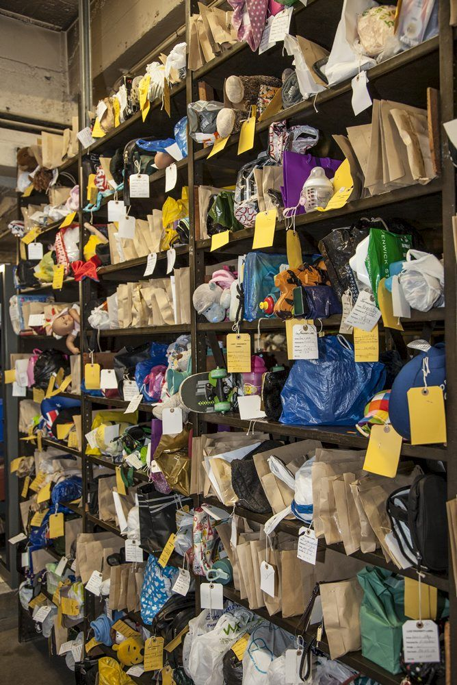
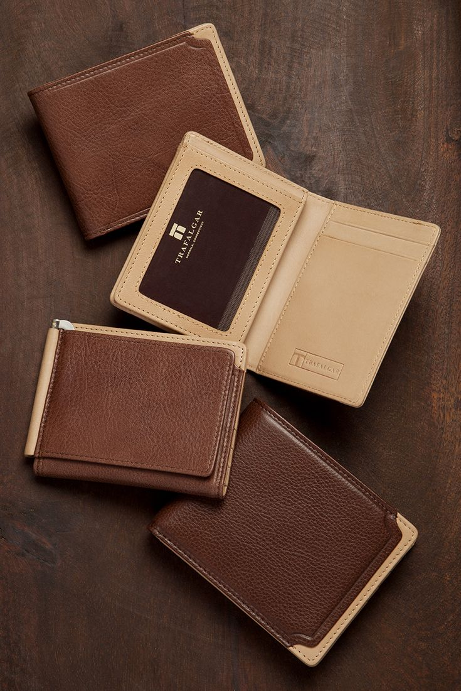

Welcome to MUST Archive
Reuniting you with your belongings
This platform helps students and staff report, view, and recover lost and found items within the MUST campus.

Report Lost Items
Easily report your lost items with detailed descriptions to increase chances of recovery.
Found Something?
Submit details of items you've found to help reunite them with their owners.
Campus Map
Visualize where items were lost or found using our interactive campus map.
MUST Campus Map
Explore the campus map to see where items were lost or found
150+
Items Recovered
200+
Items Reported
120+
Happy Reunions
Recently Reported Items
HP Laptop
Library, 2nd Floor
April 25, 2025
Lost

Brown Leather Wallet
Science Block
April 27, 2025
FoundRoom Keys
Cafeteria
April 28, 2025
Found